[9-2] USART串口外设 — 学习笔记
- 课程：江协科技《STM32入门教程-2023版 细致讲解 中文字幕》
- 视频：BV1th411z7sn?p=26，39:50（2390 秒）
- 素材：239 帧关键帧（每 10 秒，宽 1280px）+ PP-OCRv4 画面硬字幕 OCR（751 段）；关键截图 15 张随笔记收录（源图在
vidsum_out/stm32_p26/frames/，站内图片在assets/images/stm32-26/） - 字幕情况：该集 B 站没有 CC/AI 字幕，文本由画面烧录的中文字幕 OCR 得到（source=subtitle-ocr）；本集约 32:15 起大量翻参考手册 PDF，字幕里混入了手册正文、页脚水印（「本译文仅供参考，如有翻译错误，请以英文原稿为准……请读者随时注意在 ST 网站下载更新版本」）和「器件电子签名」等，这些不是老师口述内容，已剔除，错字已按画面校正（清单见文末「存疑」）。
- 本集定位：这是模块 9 的理论课（下半部分）——专门讲 STM32 内部的 USART 外设（上一集 P25 讲的是「串口协议」）。00:00 起就是 PPT：USART 简介 → USART 框图（图248） → 引脚定义表 → USART 基本结构（简化图） → 数据帧（图249 字长 / 图250 停止位）→ 起始位侦测（图252）/ 数据采样（图253）→ 波特率发生器与 BRR；约 32:15 之后转 PDF 看 CH340G 模块原理图 与参考手册第 25 章。本集没有写一行代码、没有库函数/结构体（只在口述里说「用库函数配置就是给结构体赋值」「库函数会自动帮我们算波特率」）；片尾 39:46「有关 USART 的理论部分就结束了，我们下一小节来写串口的代码」——代码在 P27。
一句话结论
USART（Universal Synchronous/Asynchronous Receiver/Transmitter，通用同步/异步收发器）是 STM32 内部集成的硬件外设，作用就是**「串口协议的硬件支持电路」：发送部分把数据寄存器里的一个字节自动转换成协议规定的波形、从 TX 引脚发出去**；接收部分自动接收 RX 引脚的波形、按协议解码成一个字节、存回数据寄存器——所以配好之后直接读写数据寄存器就能自动收发，非常方便（UART 比 USART 少个 S，就是异步版本；STM32 的同步模式只多了一个时钟输出、且只输出不输入，不能两个 USART 做同步通信，所以实际只用异步）。要看懂它就得抓住图248 框图的几条主线：① 收发数据寄存器——TDR（发送数据寄存器）和 RDR（接收数据寄存器）占用同一个地址，软件层面只见一个 DR（写 DR 进 TDR、读 DR 出 RDR，类似 51 的 SBUF）；② 双缓存与两个标志位——数据从 TDR 搬到发送移位寄存器时置 TXE（发送寄存器空，此时数据还没发完，但可以写下一个），移位寄存器在波特率时钟下右移（对应协议的低位先行）输出到 TX；接收端把 RX 波形右移入接收移位寄存器、凑满一个字节整体搬进 RDR 时置 RXNE（接收寄存器非空）——TDR/RDR 与移位寄存器构成双缓存，保证连续发送时帧间没有空闲；③ 其他增强功能——硬件流控 nRTS（输出，告诉对方我能不能收）/nCTS（输入，对方是否允许我发）、CK 时钟输出（同步模式，可兼容 SPI、可做自适应波特率）、唤醒单元（给串口分配地址实现一条总线多设备）、中断输出控制（把 TXE/RXNE 等标志位接到 NVIC）、波特率发生器。引脚是固定的复用：USART1：TX=PA9、RX=PA10；USART2：TX=PA2、RX=PA3；USART3：TX=PB10、RX=PB11（只有 USART1 可以重映射一次，设计电路要提前规划）。数据帧由「起始位 + 数据位 + 可选校验位 + 停止位」组成，字长（数据位长度）包含校验位：选 9 位字长（位0～位7 + 位8）就可以用位8 做奇偶校验，选 8 位字长就最好无校验——推荐「9 位字长 + 校验」或「8 位字长 + 无校验」，这样每帧有效载荷正好 1 字节；停止位可配 0.5/1/1.5/2 位（时长不同），一般用 1 位。接收侧的两个细节：起始位侦测——输入电路按 16 倍波特率采样，检测到下降沿后在第 3/5/7 次与第 8/9/10 次采样各看一组，每组「每 3 位至少 2 个 0」才算起始位（否则认为是噪声、回空闲重找；若只有一位不同会置 NE 噪声标志），确认后第 8/9/10 次正好落在起始位正中间、之后每位都在第 8/9/10 次采样；数据采样——每位 16 个采样时钟，取第 8/9/10 次三连采样、按 2:1 多数判决，三值不一致就置 NE。波特率由 BRR 寄存器的 DIV 决定：波特率 = fPCLK2/1 / (16 × DIV)（多除一个 16 是因为内部还有 16 倍波特率的采样时钟），DIV 分整数部分 DIV_Mantissa（位15:4）与小数部分 DIV_Fraction（位3:0），例如 USART1 要 9600：DIV = 72M/9600/16 = 468.75（二进制 111010100.11）——但用库函数时直接写波特率，库函数会自动算，不用手写 BRR。最后还看了 CH340G USB 转串口模块的原理图（USB 四线 → CH340G → TXD/RXD；板上 5V 经稳压得 3.3V；跳线帽插 4-5 或 5-6 决定 CH340 的供电与 TTL 电平 5V/3.3V，STM32 用 3.3V 就插 4-5；跳线帽拔掉仍能通信是作者实测，建议还是插上）。代码在下一集 P27。
0. 本集定位：理论课（USART 外设原理），代码在 P27
- 本集是纯理论课：00:00 起全程 PPT，约 32:15 之后转 PDF 看 CH340G 模块原理图与参考手册第 25 章，全程没有打开 Keil、没有写代码/编译下载。
- 与上一集的分工：P25 讲的是串口协议（软硬件规则，与具体硬件无关）；本集讲 STM32 内部的 USART 外设（按协议产生/接收高低电平的硬件电路）。
- 本集没有任何库函数/结构体/代码：
USART_Init、USART_Cmd、USART_SendData等均未出现；只在口述里提「这些参数都可以通过配置寄存器完成，用库函数配置就是直接给结构体赋值」「需要多少波特率直接写，库函数会自动帮我们算」——具体写法在 P27。 - 片尾（39:46）「有关 USART 的理论部分就结束了，我们下一小节来写串口的代码」。
1. USART 是什么
1.1 名称与功能
- USART（Universal Synchronous/Asynchronous Receiver/Transmitter）通用同步/异步收发器；
- 顺便区分：UART 少了 S（Synchronous），就是异步收发器；我们串口很少用同步功能，所以 USART 和 UART 用起来没什么区别；
- STM32 的 USART 同步模式只是多了一个时钟输出，而且只支持时钟输出、不支持时钟输入——所以不支持两个 USART 之间做同步通信，同步模式更多是为了兼容别的协议或特殊用途；学串口主要还是异步通信；
- USART 是 STM32 内部集成的硬件外设：可根据数据寄存器的一个字节数据自动生成数据帧时序、从 TX 引脚发送出去；也可以自动接收 RX 引脚的数据帧时序、拼接为一个字节数据存放在数据寄存器里；
- 换句话说，USART 就是串口通信的硬件支持电路：发送部分把数据寄存器的一个字节自动转换为协议规定的波形、从 TX 发出；接收部分自动接收 RX 引脚的波形、按协议解码为一个字节存进数据寄存器——配置好之后直接读写数据寄存器就能自动收发。
1.2 特性与参数
- 自带波特率发生器，最高达 4.5Mbit/s：波特率发生器其实就是分频器——比如 APB2 总线给 72MHz，波特率发生器分频得到想要的波特率时钟，最后在这个时钟下进行收发；
- 可配置数据位长度（8/9）：这个长度是包含奇偶校验位的——一般不需要校验就选 8 位、需要校验就选 9 位；
- 可配置停止位长度（0.5/1/1.5/2）：停止位长度决定了连续发送时帧的间隔；最常用 1 位停止位；
- 可选校验位（无校验/奇校验/偶校验）：最常用无校验；
- 以上所有参数都可以通过配置寄存器完成；用库函数配置更简单，直接给结构体赋值就行；
- 最常用的串口参数：波特率 9600 或 115200 + 数据位 8 位 + 停止位 1 位 + 无校验——「一般我们都选这种常用的参数，不用纠结的，选它就是了」。
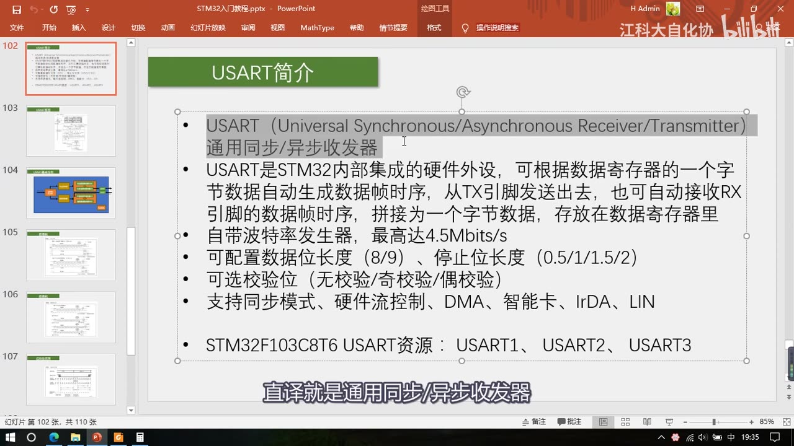
图 1：PPT「USART简介」——USART（Universal Synchronous/Asynchronous Receiver/Transmitter）通用同步/异步收发器；STM32 内部集成的硬件外设，可根据数据寄存器的一个字节数据自动生成数据帧时序从 TX 发送、也可自动接收 RX 数据帧拼接为字节存入数据寄存器；自带波特率发生器最高 4.5Mbit/s；数据位长度 8/9、停止位长度 0.5/1/1.5/2、校验无/奇/偶；支持同步模式、硬件流控制、DMA、智能卡、IrDA、LIN；STM32F103C8T6 USART 资源：USART1、USART2、USART3；字幕「直译就是通用同步/异步收发器」
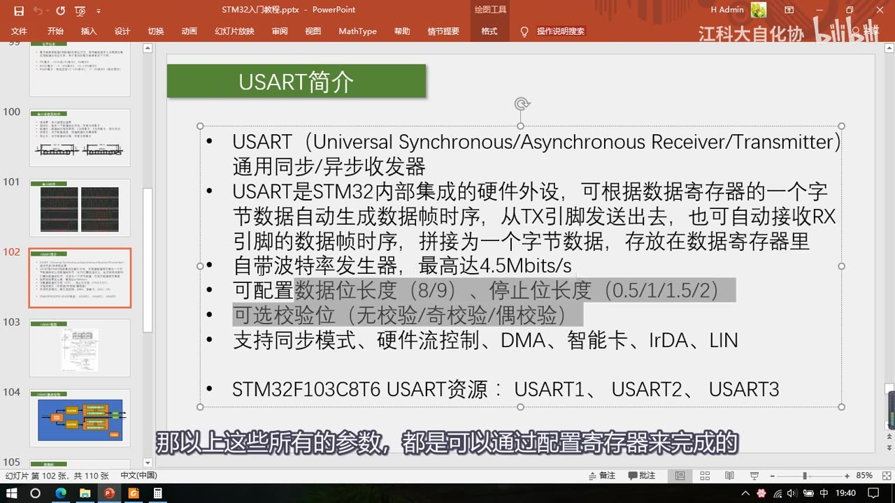
图 2：同一页「USART简介」，数据位长度（8/9）、停止位长度（0.5/1/1.5/2）、可选校验位（无/奇/偶）三行被高亮——这些都是可配置参数；字幕「那以上这些所有的参数，都是可以通过配置寄存器来完成的」
1.3 增强功能与资源
- 硬件流控制：比如 A 设备的 TX 向 B 设备的 RX 一直发、发得太快，B 处理不过来——没有流控就只能丢弃新数据或覆盖原数据；有流控则在硬件上多出一根线：B 没准备好接收就置高电平、准备好了置低电平，A 收到反馈「只会在 B 准备好的时候才发」——防止因为 B 处理慢而丢失数据；STM32 也支持流控，但一般不用；
- DMA：串口支持用 DMA 转运数据，如果有大量数据收发，可以用 DMA 减轻 CPU 负担（DMA 上一节学过）；
- 同步模式 / 智能卡 / IrDA / LIN：这些都是和串口非常像的其他协议，STM32 给 USART 加了一点小改动就能兼容；我们一般不用（智能卡跟饭卡、公交卡有关；IrDA 是红外通信、靠红外发光管闪烁通信，不是遥控器那种红外；LIN 是局域网通信协议）；
- 资源与时钟：C8T6 有 USART1、USART2、USART3 三个独立的 USART 外设；USART1 挂在 APB2 总线（PCLK2，72MHz），USART2、USART3 挂在 APB1 总线（PCLK1，36MHz）——开时钟的时候注意一下（挂哪个总线对使用影响不大）。
2. USART 框图（图248）
框图第一眼看上去很复杂（线路、框框很多），实际上主要是把各个寄存器和寄存器每一位控制的地方都画出来了，所以显得乱——看的时候可以先忽略寄存器，先看主体结构。
2.1 引脚与数据寄存器
- 左上角是引脚部分：TX 和 RX 分别是发送和接收引脚；下面 SW_RX、IRDA_OUT/IRDA_IN 这些是智能卡和 IrDA 通信的引脚——我们不用这些协议，这些引脚和右边的 IrDA SIR 编解码模块都不用管；
- 右侧是数据寄存器：发送数据寄存器 TDR（Transmit DR） 和接收数据寄存器 RDR（Receive DR）——这两个寄存器占用同一个地址，就像 51 单片机串口的 SBUF 一样，程序上只表现为一个寄存器 DR（Data Register）；但硬件上分成两个：TDR 只写、RDR 只读——写操作时数据写入 TDR、读操作时数据从 RDR 读出。
2.2 发送流程与 TXE
- TDR 下面是发送移位寄存器：给 TDR 写入一个字节（例如 0x55，二进制 01010101）后，硬件检测到写入，会先检查当前移位寄存器是否正有数据在移位——如果没有，这个字节就立刻全部移动到发送移位寄存器、准备发送；
- 数据从 TDR 移到移位寄存器时会置一个标志位 TXE（TX Empty，发送寄存器空）——我们检查 TXE 置 1 了，就可以往 TDR 写入下一个数据；
- 注意：TXE 置 1 时数据其实还没发送出去——只要数据从 TDR 转移到移位寄存器，TXE 就会置 1，就可以写新数据了；
- 移位寄存器在波特率发生器时钟的驱动下向右移位，一位一位把数据输出到 TX 引脚——右移正好和串口协议规定的「低位先行」一致；
- 双缓存（TDR + 移位寄存器）：数据移完后新数据自动从 TDR 转移过来；如果移位还没完成，TDR 的数据就等待、一旦移位完成立刻转移过来——这样连续发送时帧与帧之间不会有空闲，提高效率（「数据一旦从 TDR 转移到移位寄存器，不管有没有移位完成，我立刻把下一个数据放在 TDR 等着」）。
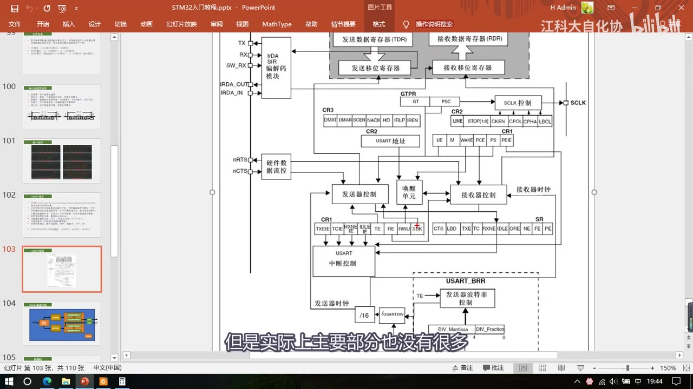
图 3：图248 USART 框图的放大（上半部分）——左侧 TX/RX 引脚与 IrDA SIR 编解码模块；上方「发送数据寄存器 TDR」「接收数据寄存器 RDR」与「发送移位寄存器」「接收移位寄存器」；右侧 CR3/CR2/CR1 的位域（DMAR/SCEN/NACK/HD/IRLP/IREN、LINE/STOP/CLKEN/CPOL/CPHA/LBCL、UE/M/WAKE/PCE/PS/PIE 等）、SCLK；左侧 nRTS/nCTS 硬件数据流控；下方发送器控制、唤醒单元、接收器控制、接收器时钟、USART 中断控制、SR 状态位、USART_BRR、/16、USARTDIV；字幕「但是实际上主要部分也没有很多」
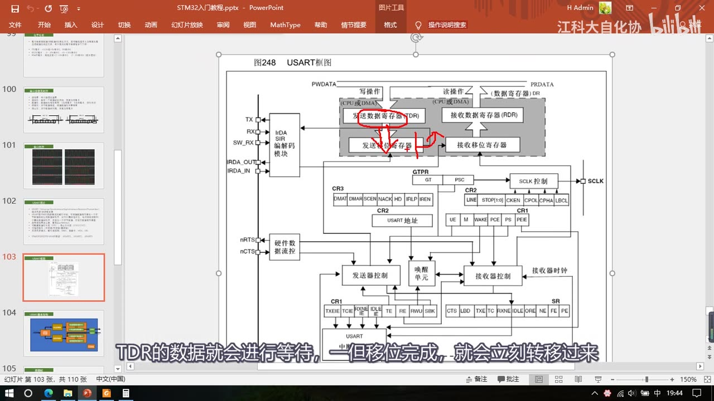
图 4：图248 全图（讲双缓存时）——红圈圈住「发送数据寄存器 TDR」与下方的「发送移位寄存器」，以及两者之间的转移箭头；字幕「TDR的数据就会进行等待，一旦移位完成，就会立刻转移过来」
2.3 接收流程与 RXNE
- 数据从 RX 引脚通向接收移位寄存器，在接收器控制下一位一位地读取 RX 电平——先把电平放在最高位，然后向右移位，移位 8 次后就接收到一个字节；
- 同样因为串口协议是低位先行，接收移位寄存器是从高位往低位方向移动；
- 一个字节移位完成后，整个字节一次性转移到接收数据寄存器 RDR，转移的同时置标志位 RXNE（RX Not Empty，接收数据寄存器非空）——检测到 RXNE 置 1 就可以把数据读走；
- 这里也是两个寄存器缓存：数据从移位寄存器转移到 RDR 后，就可以直接移位接收下一帧。
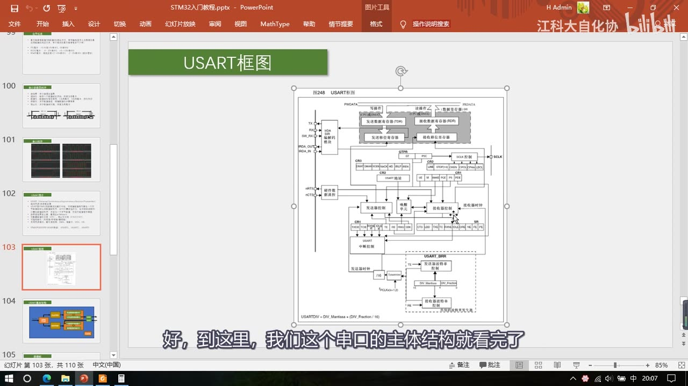
图 5：图248 完整 USART 框图（PPT「USART框图」页）——可见 TX/RX、TDR/RDR、发送/接收移位寄存器、控制器、nRTS/nCTS、CK/SCLK、唤醒单元、中断控制、SR 状态位、USART_BRR（DIV_Mantissa/DIV_Fraction）、/16 与 USARTDIV，左下角标注 USARTDIV = DIV_Mantissa + DIV_Fraction/16；字幕「好，到这里，我们这个串口的主体结构就看完了」
2.4 控制器、流控、CK、唤醒单元与中断
- 发送器控制 / 接收器控制：分别控制发送移位寄存器 / 接收移位寄存器的工作；
- 硬件数据流控（nRTS/nCTS）：nRTS（Request To Send，请求发送）是输出脚——告诉别人「我当前能不能接收」；nCTS（Clear To Send，清除发送）是输入脚；前面加 n 表示低电平有效。用法：我的 RTS 输出「能否接收」的反馈，接到对方的 CTS——我能接收时 RTS 置低电平（请求对方发送），对方 CTS 收到就一直发；我处理不过来时（比如 RDR 一直没读、又有新数据来）RTS 置高电平，对方 CTS 收到就暂停发送，直到 RDR 被读走、RTS 回低电平再继续。反过来我发送时，我的 CTS 要接对方的 RTS——所以 TX 和 CTS 是一对、RX 和 RTS 是一对，CTS 和 RTS 也要交叉连接（一般不用流控）；
- CK 时钟输出：配合发送移位寄存器——每移位一次，同步时钟电平就跳变一个周期，告诉对方「我移出去一位数据了」；只支持输出不支持输入（所以两个 USART 不能同步通信）；用途：兼容别的协议（加了时钟就像 SPI）、自适应波特率（测量时钟周期反推波特率）；
- 唤醒单元：用来实现串口挂载多设备——给串口分配一个地址，收到指定地址就唤醒工作、收到别的地址就保持沉默（串口一般是点对点，这个功能一般不用）；
- 中断输出控制：把状态寄存器 SR 的各种标志位接到 NVIC——其中最重点的是 TXE（发送寄存器空）和 RXNE（接收寄存器非空），这两个是判断发送状态和接收状态的必要标志位；中断输出控制就是配置中断是否能通向 NVIC；
- 波特率发生器（见第 6 章）：输入 fPCLKx（USART1 是 PCLK2=72MHz，其他是 PCLK1=36MHz），除以 USARTDIV（含整数+4 位小数）后再除以 16，得到发送器时钟和接收器时钟；TE（TX Enable）为 1 时发送部分的波特率才有效，RE（RX Enable）为 1 时接收部分的波特率有效。
3. 引脚映射
- 看引脚定义表的「复用功能」一栏，就能查到每个 USART 的引脚复用在了哪个 GPIO 上：
| USART | TX（发送） | RX（接收） |
|---|---|---|
| USART1 | PA9 | PA10 |
| USART2 | PA2 | PA3 |
| USART3 | PB10 | PB11 |
- 这些引脚必须按引脚定义表来：比如用 USART1，TX 必须是 PA9、RX 必须是 PA10；
- 只有 USART1 有重映射——「看一下重映射这里有没有重映射，这里有 USART1 的重映射，所以有机会换一次」；其他 USART 就没有机会换引脚了；
- 这个表在设计电路时很重要——要提前规划好引脚，别让复用功能冲突；「有关外设的复用引脚是哪个，都是看这个表，一看就知道」。
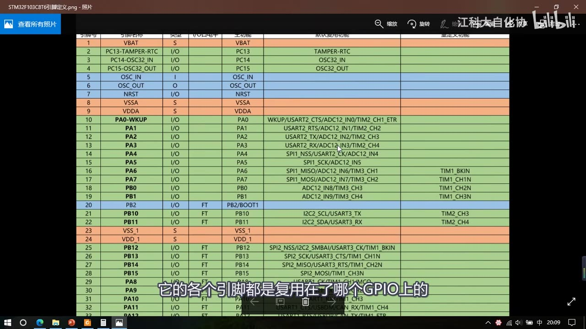
图 6：引脚定义表（STM32F103C8T6引脚定义）——可见 PA2/PA3 的复用功能是 USART2_TX/USART2_RX、PA9/PA10 是 USART1_TX/USART1_RX、PB10/PB11 是 USART3_TX/USART3_RX；字幕「它的各个引脚都是复用在了哪个GPIO上的」
4. USART 基本结构（作者简化图）
作者画了一张简化结构图（USART 最主要、最基本的结构），写代码时对照它最直观：
- 最左边是波特率发生器：产生约定的通信速率，时钟来源是 PCLK2/PCLK1；
- 分频后的时钟通向发送控制器和接收控制器，由它们控制发送移位和接收移位；
- 发送侧：发送数据寄存器 TDR 和发送移位寄存器配合，把数据一位一位移出去，通过 GPIO 的复用输出到 TX 引脚，产生串口协议规定的波形（图上画了右移符号 = 低位先行）；数据由数据寄存器转到移位寄存器时置 TXE，判断它就知道能不能写下一个数据；
- 接收侧：RX 引脚的波形通过 GPIO 输入，在接收控制器控制下一位一位移入接收移位寄存器（也是右移，因为低位先行所以从左边移进来）；移完一帧后数据统一转运到接收数据寄存器 RDR，同时置 RXNE——检查它就知道是否收到数据；RXNE 也可以去申请中断，这样收到数据时能直接进中断函数快速读取和保存；
- 软件层面只有一个 DR：右边实际有四个寄存器，但写入 DR 时数据走上面（发送）、读取 DR 时走下面（接收）；
- 右下角是开关控制：配置完成后用 Cmd 开启外设。
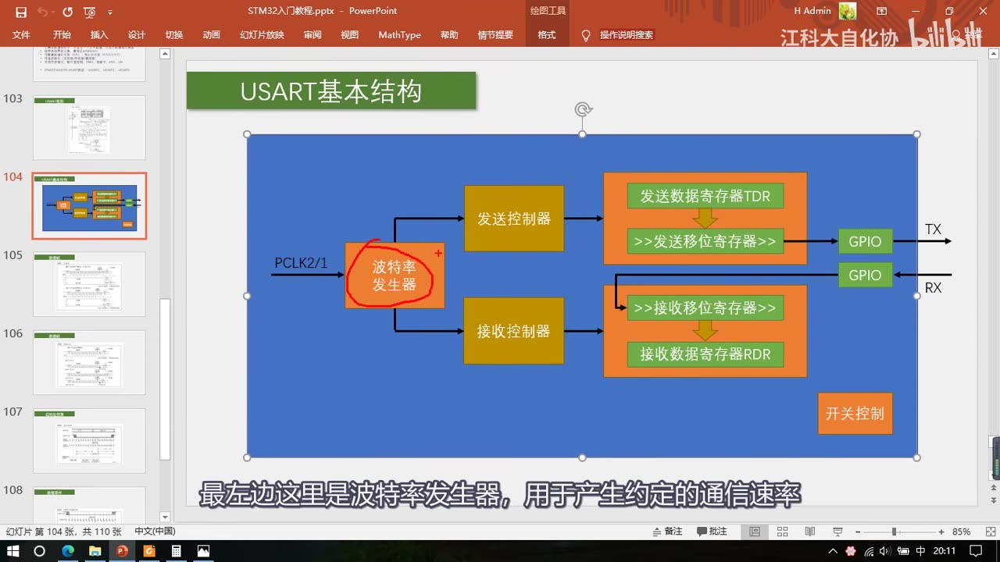
图 7：PPT「USART基本结构」（作者简化图）——左侧 PCLK2/1 → 红圈圈住的「波特率发生器」→ 发送控制器 / 接收控制器；发送侧「发送数据寄存器 TDR」→「>>发送移位寄存器>>」→ GPIO → TX，接收侧 GPIO ← RX ←「>>接收移位寄存器>>」→「接收数据寄存器 RDR」；右下角「开关控制」；字幕「最左边这里是波特率发生器，用于产生约定的通信速率」
5. 数据帧格式（字长与停止位）
5.1 字长（图249）
- 图249「字长设置」是程序中配置 9 位字长和 8 位字长的波形对比——这里的「字长」就是数据位长度，且是「包含校验位」的描述方式；
- 9 位字长（设置了 M 位）：空闲高电平 → 起始位 0 → 依次发送位0～位8（共 9 位） → 停止位 1；其中位8（第 9 位）可以是奇偶校验位，通过配置寄存器可设为奇校验/偶校验/无校验——可以配置成「8 位有效载荷 + 1 位校验位」，也可以选择「9 位全是有效载荷」；不过既然选了 9 位字长，一般就是要加校验位的（因为 8 位有效载荷正好对应一个字节）；
- 8 位字长（未设置 M 位）：数据位从位0～位7，共 8 位，比上面少一个位8；同样最后一位位7 也是可能的奇偶校验位——既然选了 8 位字长，最好选无校验，否则校验位占 1 位、有效载荷只剩 7 位，「字节都发不了」；
- 结论（4 种选择里推荐两种）：「9 位字长 + 有校验」或「8 位字长 + 无校验」——这样每一帧的有效载荷都是 1 字节；
- 图里还有同步时钟（时钟频率与数据速率相同、接收端可在上升沿采样；极性/相位也可配置）、空闲帧（从头到尾都是 1）、断开帧（从头到尾都是 0）——空闲帧和断开帧是局域网协议用的，串口用不着、不用管。
5.2 停止位（图250）
- STM32 串口的停止位长度可以配置为 0.5、1、1.5、2 位，区别就是停止位的时长不一样：
- 1 个停止位：停止位时长 = 数据位一位的时长；
- 1.5 个停止位：时长是数据位一位的 1.5 倍；
- 2 个停止位：2 倍；0.5 个停止位：0.5 倍；
- 一般选 1 位停止位就行，其他参数不太常用。
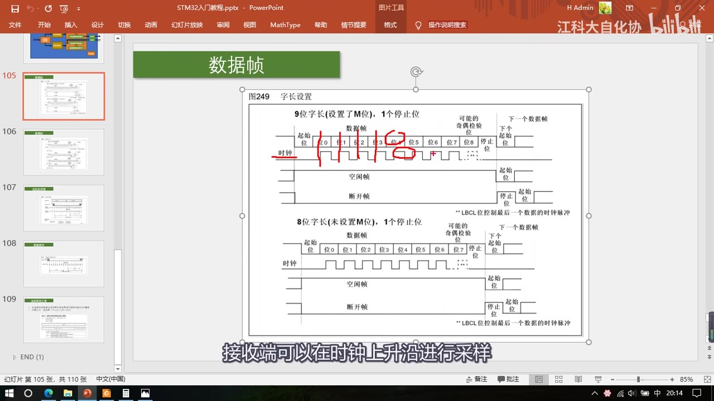
图 8：PPT「数据帧」——图249「字长设置」：上半 9 位字长（设置了 M 位）、1 个停止位（起始位、位0～位8、可能的奇偶校验位、停止位、下一个数据帧；红笔标出位0/1/位8 的发送顺序），下方标注「空闲帧（全 1）」「断开帧（全 0）」「LBCL 位控制最后一个数据的时钟脉冲」；下半 8 位字长（未设置 M 位）、1 个停止位（起始位、位0～位7、可能的奇偶校验位、停止位）；字幕「接收端可以在时钟上升沿进行采样」
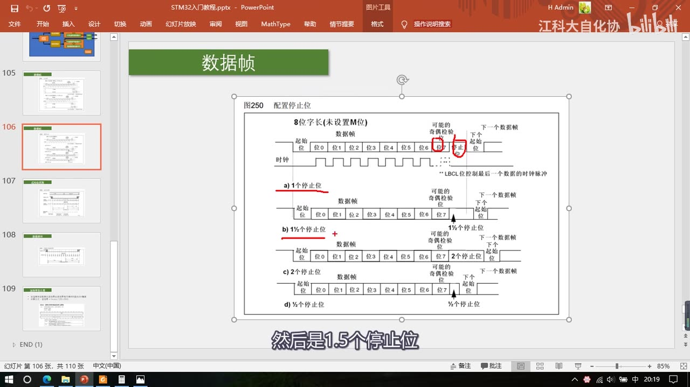
图 9：PPT「数据帧」——图250「配置停止位」：同一帧结构下对比 a) 1 个停止位、b) 1½ 个停止位、c) 2 个停止位、d) ½ 个停止位 的波形，红笔标出 1½ 与 2 个停止位的宽度；字幕「然后是1.5个停止位」
6. 起始位侦测与数据采样
串口的输出 TX 比输入 RX 简单很多：输出只要定时翻转电平；输入就复杂——既要保证采样频率和波特率一致，又要保证每次采样点正好落在每一位的正中间（否则采样点靠前/靠后时电平还在翻转，容易采错），还要对噪声有一定的判断能力。
6.1 起始位侦测（图252）
- 输入电路以波特率的 16 倍频率采样——一位的时间里可以采 16 次；
- 策略：空闲状态高电平，采样一直是 1；某个位置突然采到 0，说明这两次采样之间出现了下降沿——如果没有噪声，之后就是起始位；
- 起始位内会连续采 16 次；没有噪声时 16 次都是 0，但实际电路有噪声，所以即使出现下降沿，后续也要再采样几次以防万一；
- 按手册描述：在下降沿之后的第 3 次、5 次、7 次进行一批采样；在第 8 次、9 次、10 次再进行一批采样——这两批采样都要求「每 3 位里至少应有 2 个 0」：
- 没有噪声 → 全是 0，满足；
- 轻微噪声导致 3 位里只有 2 个 0（另一个是 1）→ 也算检测到起始位，但状态寄存器会置 NE（Noise Error）噪声标志——「数据我是收到了，但是有噪声，你悠着点用」；
- 3 位里只有 1 个 0 → 不算检测到起始位，可能前面的下降沿是噪声导致的，电路忽略前面的数据、重新开始捕捉下降沿；
- 通过起始位侦测后，接收状态由空闲变为接收起始位，同时第 8/9/10 次采样的位置正好是起始位的正中间——之后接收数据位时都在这第 8/9/10 次采样，保证采样位置在每一位的正中间。
6.2 数据采样（图253）
- 到一个数据位的时间长度是 1～16 共 16 个采样时钟；因为起始位侦测已经对齐了采样时钟，数据位就直接在第 8、9、10 次采样；
- 为保证可靠性连续采样 3 次：理想情况 3 次全为 1 或全为 0，全 1 认为收到 1、全 0 认为收到 0；
- 如果有噪声导致 3 次不一致，就按 2:1 的多数判决（2 次为 1 认为收到 1、2 次为 0 认为收到 0），同时置 NE 噪声标志；
- 一位的时间可以看作 7/16 + 6/16 + 7/16 三段（采样点落在中间 6/16 那段的第 8/9/10 次）。
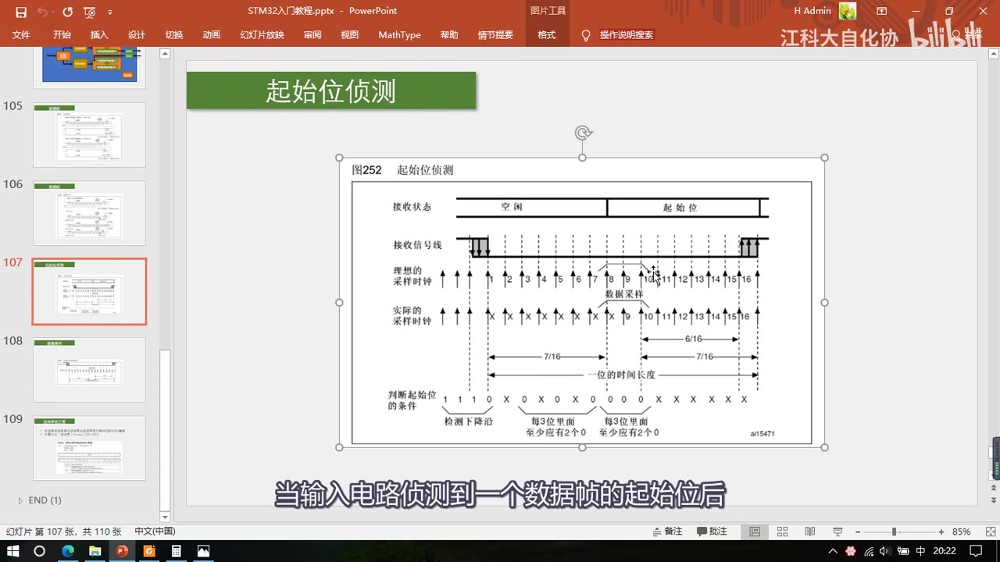
图 10：PPT「起始位侦测」——图252：上方灰色条表示接收状态（空闲 → 起始位）；「理想的采样时钟」1～16 与「实际的采样时钟」1～16 虚线对齐；下方「判断起始位的条件」标出「1 1 1 0（检测下降沿）」「每 3 位里至少应有 2 个 0」两处，以及一位时间长度 7/16 + 6/16 + 7/16；字幕「当输入电路侦测到一个数据帧的起始位后」
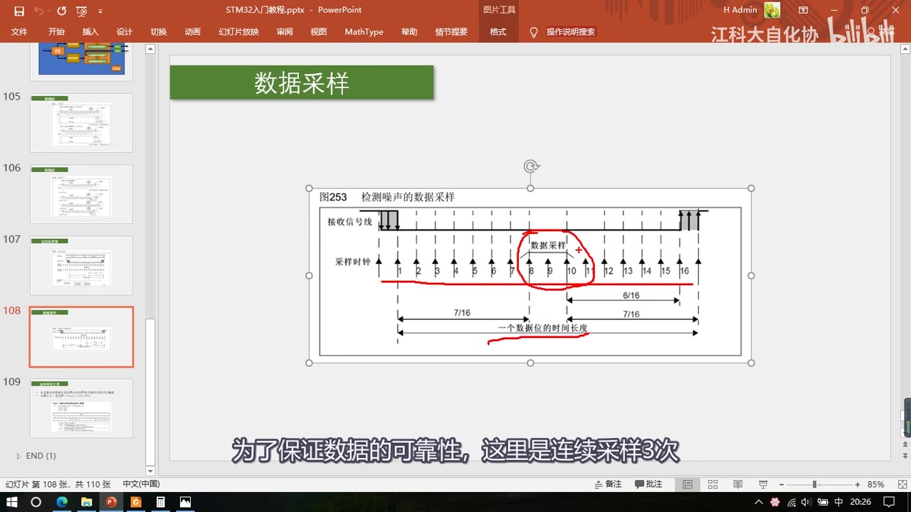
图 11：PPT「数据采样」——图253「检测噪声的数据采样」：采样时钟 1～16，红圈圈住第 8/9/10 次「数据采样」，标注一位时间长度 7/16 + 6/16 + 7/16；字幕「为了保证数据的可靠性，这里是连续采样3次」
7. 波特率发生器与 BRR
- 发送器和接收器的波特率由波特率寄存器 BRR 里的 DIV（USARTDIV）确定；
- 计算公式：波特率 = fPCLK2/1 / (16 × DIV)——为什么多除一个 16？因为内部还有一个 16 倍波特率的采样时钟，所以「输入时钟 / DIV 要等于 16 倍的波特率」，最终计算波特率自然要多除一个 16；
- USART_BRR 寄存器（地址偏移 0x08、复位值 0x0000）：位 15:4
DIV_Mantissa（USARTDIV 的整数部分）、位 3:0DIV_Fraction（USARTDIV 的小数部分）——DIV 支持小数点后 4 位，分频更精细（有些波特率用 72M 除整数除不尽，会有误差）； - 计算示例：把 USART1 配成 9600——代入公式
9600 = 72M / (16 × DIV)，解得 DIV = 72M/9600/16 = 468.75（带小数的分频系数）；写成寄存器要转成二进制：468.75 = 111010100.11——整数部分111010100（前面多出来的补 0）写到 DIV_Mantissa，小数部分11（后面多出来的补 0）写到 DIV_Fraction； - 不过用库函数配置就非常方便：需要多少波特率直接写，库函数会自动帮我们算——不用手写 BRR（具体写法在 P27）。
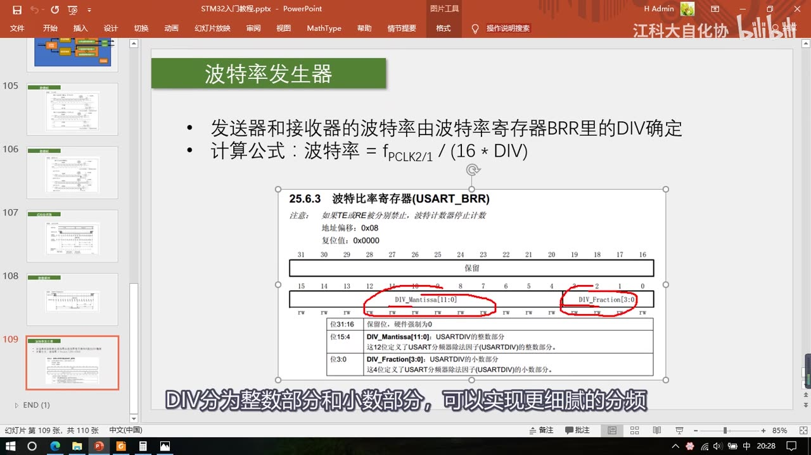
*图 12：PPT「波特率发生器」——发送器和接收器的波特率由 BRR 里的 DIV 确定；计算公式 波特率 = fPCLK2/1 / (16 × DIV)；下方手册 25.6.3 波特率比率寄存器（USART_BRR）：地址偏移 0x08、复位值 0x0000，DIV_Mantissa（位15:4，USARTDIV 的整数部分）与 DIV_Fraction（位3:0，USARTDIV 的小数部分）（红圈标出两段）；字幕「DIV分为整数部分和小数部分，可以实现更细腻的分频」*
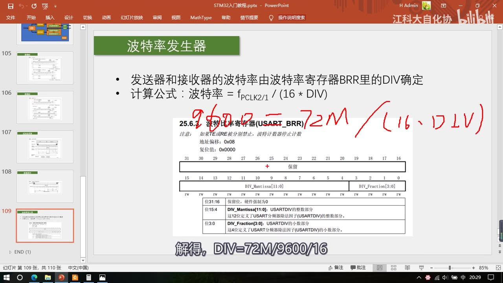
图 13：同一页上的红笔推导——9600 = 72M / (16 · DIV)，字幕「解得，DIV=72M/9600/16」（结果 468.75，再转二进制 111010100.11 写进 BRR）
8. CH340G USB 转串口模块原理图
这是套件里 USB 转串口模块的内部电路图，有几个注意事项。
- 最左边是 USB 接口：USB 有 4 根线 GND、D+、D-、VCC；USB 标准供电是 5V，中间 D+/D- 是通信线（走 USB 协议），所以需要 CH340G 芯片转换——转换后输出 TXD/RXD（串口协议），通过排针引出来；
- 供电策略（重点）：所有电都来自 VCC+5V；VCC+5V 经稳压管电路降压得到 VCC+3V3；5V 和 3.3V 都通过排针引出来——所以第 6 脚和第 4 脚分别是 5V 和 3.3V 输出；
- 第 5 脚标的是 VCC，看原理图可知它通向 CH340G 芯片的 VCC——所以这个脚实际上是 CH340 的电源输入脚；
- 跳线帽：模块排针一般有跳线帽，需要插在 4、5 脚或 5、6 脚上（板上有文字说明）：
- 短路 5V → VCC：CH340G 供电为 5V，TTL 电平为 5V；
- 短路 3V3 → VCC：CH340G 供电为 3.3V，TTL 电平为 3.3V；
- 所以跳线帽既用来选择通信电平、也是给 CH340 芯片供电的，最好不要拿掉；
- 作者实测（经验，非手册结论）：即使把跳线帽拔掉、不给芯片供电，这个串口还是能正常工作（可能是从别处汲取了电流）；不插跳线帽时通信电平为 3.3V——但为了稳定，最好还是插上跳线帽；
- STM32 通信需要 3.3V，所以跳线帽插在 4、5 脚；不过这样供电就只剩一个 5V 脚（「要么选 5V 电平、剩下供电脚只有 3.3V；要么选 3.3V 电平、剩下供电脚是 5V」）——因为 5V 和 3.3V 电平可以互相兼容，如果既要通信又要供电，保证供电正确就行；
- 引脚说明：5V 是从 USB 取出的 5V 电源输出；VCC 是模块供电点；3V3 是模块稳压出来的 3.3V 电源输出；TXD 串口数据输出；RXD 串口数据输入；GND 模块负极（与目标系统共地）；
- 右下角是指示灯和电源滤波：PWR 电源指示灯、TXD/RXD 指示灯（引脚上有数据传输时会闪烁）。
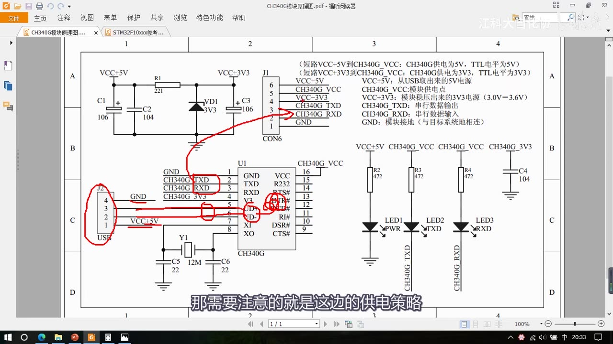
图 14：CH340G 模块原理图（PDF）——左侧 USB 接口（J2，4 线）→ CH340G（U1）→ TXD/RXD；上方 VCC+5V 经 R1/VD1 等得到 VCC+3V3；右侧排针 J1（CON6）6 脚：5V/VCC/3V3/TXD/RXD/GND；右上文字说明「短路 VCC+5V 到 CH340G_VCC：CH340G 供电为 5V，TTL 电平为 5V」「短路 VCC+3V3 到 CH340G_VCC：CH340G 供电为 3.3V，TTL 电平为 3.3V」及 6 个引脚说明；下方 LED1(PWR)/LED2(TXD)/LED3(RXD)；红笔圈出 USB、CH340G 与 TXD/RXD、排针 3/4 脚；字幕「那需要注意的就是这边的供电策略」
9. 参考手册导读
- 本集涉及参考手册第 25 章：通用同步异步收发器（USART）；
- 结构：25.1 介绍、25.2 主要特性、框图、功能描述——功能描述就是把 PPT 上介绍的这些细节展开（数据帧格式与字长配置、发送数据寄存器 TDR 与移位寄存器的配合、空闲帧包含可配置的停止位、起始位侦测的采样序列、噪声错误与采样数据有效性表、分数波特率的产生与计算公式、多主机通信、校验控制、LIN 模式、同步模式（CK 脚与 TX 脚联合工作、LBCL 位控制最后数据位的时钟脉冲）、单线半双工、智能卡、IrDA、利用 DMA 连续通信、硬件流控制 RTS/CTS、中断）；
- 25.6 寄存器描述：SR（状态寄存器，各种标志位，位含 CTS/LBD/TXE/TC/RXNE/IDLE/ORE/NE/FE/PE）、DR（数据寄存器，TDR+RDR）、BRR（波特率寄存器）、CR1/CR2/CR3（配置寄存器）——「状态寄存器 SR、数据寄存器 DR、配置寄存器 CR」这三类寄存器基本每个外设都有；
- 手册里还有表176「设置波特率时的误差计算」（36MHz/72MHz 两列、常用波特率对应的 BRR 值与误差）——只在手册页出现、老师没有逐行讲，需要时自己查；
- 25.6.8 节是 USART 寄存器地址映像（表182），列出各寄存器的偏移与复位值；手册最后还有模式配置表（可以看到 4 号、5 号 USART 不支持同步功能，所以它们的名字直接叫 UART）；
- 片尾（39:46）：「有关 USART 的理论部分就结束了，我们下一小节来写串口的代码」——代码在 P27。
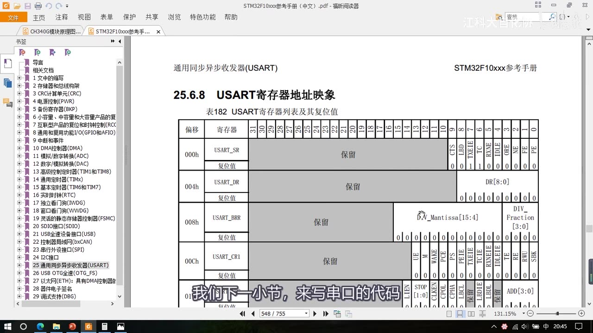
图 15：参考手册 25.6.8「USART 寄存器地址映像」表182——偏移 0x00 USART_SR（位含 CTS/LBD/TXE/TC/RXNE/IDLE/ORE/NE/FE/PE 等）、0x04 USART_DR、0x08 USART_BRR（DIV_Mantissa（位15:4）与 DIV_Fraction（位3:0））、0x0C USART_CR1（UE/M/WAKE/PCE/PS/PIE/TXEIE/TCIE/RXNEIE/PEIE/TE/RE/RWU/SBK 等）；字幕「我们下一小节，来写串口的代码」
坑与易错点
- TDR 和 RDR 是同一个地址：软件只见一个 DR——写 DR 发数据、读 DR 收数据，别以为有两个可读写的寄存器。
- TXE 置 1 时数据还没发完：它只表示「TDR 空了、可以写下一个」，不代表这一帧已经发送出去；要等发送完成要看 TC 标志（本集只提了标志位种类）。
- RXNE 置 1 表示收到数据了：读走 RDR 后它会清零，下一次收到数据再置 1——判断收到数据用 RXNE。
- 双重缓存（TDR+移位寄存器 / RDR+移位寄存器）的作用：保证连续收发时帧间没有空闲、不会丢数据——这是 USART 能高速连续收发的原因。
- 字长「包含校验位」：9 位字长 = 8 位有效载荷 + 位8（可做校验）；如果选了 9 位字长又不用校验，等于浪费 1 位；推荐 9 位+校验 或 8 位+无校验。
- 引脚是固定的：USART1 = PA9/PA10、USART2 = PA2/PA3、USART3 = PB10/PB11；只有 USART1 能重映射一次，其他 USART 没有重映射。
- USART1 挂 APB2、USART2/3 挂 APB1：开时钟时注意选对总线（PCLK2=72MHz、PCLK1=36MHz），也影响波特率计算用哪个时钟。
- 波特率公式要除 16：
波特率 = fPCLK/(16×DIV)——因为内部有 16 倍波特率的采样时钟，别漏掉这个 16。 - BRR 的整数/小数分开填：位15:4 是整数部分、位3:0 是小数部分（4 位小数），不是直接填 DIV 的十进制；不过用库函数会自动算。
- 同步模式只输出时钟：不能两个 USART 做同步通信；CK 只输出不输入。
- 流控是「交叉连接」：TX 配对方 CTS、RX 配对方 RTS；nRTS/nCTS 的 n 表示低电平有效；一般不用。
- 跳线帽别随便拔：它既选 TTL 电平（5V/3.3V）又给 CH340 供电；虽然作者实测拔掉也能通信，但为了稳定要插上（这是作者经验，不是手册结论）。
- STM32 是 3.3V 器件：跳线帽插 4-5 脚（3.3V 电平）——电平不一致会通信异常。
- 本集没有代码：所有库函数/结构体配置（
USART_Init、USART_Cmd、读写 DR 等）在 P27；本集只讲外设原理与寄存器位。
时间轴
| 时间 | 内容 |
|---|---|
| 0:01 | 了解完串口协议，来看 STM32 的 USART 外设 |
| 0:07 | USART 全称 Universal Synchronous/Asynchronous Receiver/Transmitter |
| 0:13 | 直译就是通用同步/异步收发器，S 是同步的意思 |
| 0:19 | 另外经常遇到串口叫 UART，少了个 S 就是异步收发器 |
| 0:27 | 我们串口很少使用同步功能，所以 USART 和 UART 用起来没区别 |
| 0:34 | STM32 的 USART 同步模式只是多了个时钟输出 |
| 0:39 | 它只支持时钟输出、不支持时钟输入 |
| 0:45 | 所以同步模式主要为了兼容别的协议或特殊用途 |
| 0:49 | 并不支持两个 USART 之间进行同步通信，所以主要还是异步 |
| 0:57 | USART 是 STM32 内部集成的硬件外设 |
| 1:02 | 可根据数据寄存器的一个字节自动生成数据帧时序，从 TX 发出 |
| 1:10 | 也可自动接收 RX 的数据帧，拼接为一个字节存进数据寄存器 |
| 1:23 | 串口主要靠约定好的波形通信，USART 就是它的硬件支持电路 |
| 1:35 | USART 大致分发送和接收两部分 |
| 1:39 | 发送部分把数据寄存器的一个字节自动转成协议波形从 TX 发出 |
| 1:48 | 接收部分自动接收 RX 波形、按协议解码成字节存进数据寄存器 |
| 1:59 | 配置好 USART 之后，直接读写数据寄存器就能自动收发 |
| 2:10 | 自带波特率发生器，最高达 4.5Mbit/s |
| 2:15 | 波特率发生器就是分频器：APB2 给 72MHz，分频得到波特率时钟 |
| 2:35 | 可配置数据位长度（8/9）、停止位长度（0.5/1/1.5/2） |
| 2:47 | 数据位长度包含奇偶校验位：不需要校验选 8、需要校验选 9 |
| 3:00 | 停止位长度决定连续发送时帧的间隔，最常用 1 位停止位 |
| 3:13 | 可选校验位（无/奇/偶），最常用无校验 |
| 3:24 | 以上参数都可以通过配置寄存器完成；用库函数就是给结构体赋值 |
| 3:33 | 最常用参数：9600 或 115200、数据位 8、停止位 1、无校验 |
| 3:47 | 支持同步模式、硬件流控制、DMA、智能卡、IrDA、LIN |
| 4:08 | 硬件流控制：A 发太快 B 处理不过来会丢数据 |
| 4:21 | 有流控时硬件多一根线，B 没准备好置高、准备好置低 |
| 4:36 | 这样防止因为 B 处理慢导致数据丢失；STM32 也有，但一般不用 |
| 4:48 | DMA：大量数据收发时用 DMA 减轻 CPU 负担 |
| 5:01 | 智能卡、IrDA、LIN 是和串口很像的协议，一般不用 |
| 5:49 | C8T6 的 USART 资源：USART1、USART2、USART3 三个独立外设 |
| 6:05 | USART1 在 APB2，USART2/3 在 APB1，开时钟时注意 |
| 6:24 | 来看 USART 框图（图248），第一眼看上去很复杂 |
| 6:31 | 实际上主要是把各个寄存器和每位控制都画出来了，所以显得乱 |
| 6:44 | 看的时候先忽略寄存器，先看主体结构 |
| 6:50 | 左上角是引脚：TX 和 RX 是发送和接收引脚 |
| 6:58 | SW_RX、IRDA_OUT/IN 是智能卡和 IrDA 的引脚，我们不用 |
| 7:15 | 右侧是数据寄存器：TDR（发送数据寄存器）和 RDR（接收数据寄存器） |
| 7:44 | 这两个寄存器占用同一个地址，类似 51 的 SBUF |
| 7:51 | 程序上只表现为一个 DR（数据寄存器） |
| 7:56 | 硬件上分成两个：TDR 只写、RDR 只读 |
| 8:08 | 写操作写入 TDR，读操作从 RDR 读出 |
| 8:17 | 下面是两个移位寄存器，一个发送一个接收 |
| 8:36 | 举例：给 TDR 写入 0x55（01010101） |
| 8:46 | 硬件检测到写入后，检查移位寄存器是否正在移位 |
| 8:55 | 如果没有，数据立刻全部移到发送移位寄存器 |
| 9:03 | 数据从 TDR 移到移位寄存器时置 TXE（发送寄存器空） |
| 9:11 | TXE 置 1 就可以往 TDR 写下一个数据 |
| 9:17 | 注意 TXE 置 1 时数据其实还没发送出去 |
| 9:25 | 移位寄存器在波特率时钟驱动下右移，一位一位输出到 TX |
| 9:42 | 右移正好和串口协议的低位先行一致 |
| 9:49 | 数据移完后新数据自动从 TDR 转移过来 |
| 10:00 | 如果移位还没完成，TDR 的数据就等待、一旦完成立刻转移 |
| 10:05 | TDR 和移位寄存器的双缓存保证连续发送帧间没有空闲 |
| 10:23 | 简单说就是：数据一转移到移位寄存器，就立刻把下一个放在 TDR 等着 |
| 10:33 | 数据从 RX 通向接收移位寄存器，在接收器控制下逐位读取 |
| 10:40 | 先放最高位再右移，移位 8 次就接收到一个字节 |
| 10:52 | 同样因为低位先行，接收移位寄存器从高位往低位方向移动 |
| 10:57 | 一个字节移位完成后整体转移到 RDR |
| 11:07 | 转移过程中置 RXNE（接收数据寄存器非空） |
| 11:15 | 检测到 RXNE 置 1 就可以把数据读走 |
| 11:19 | 同样是两个寄存器缓存，数据转到 RDR 后就可以接收下一帧 |
| 11:29 | 这就是 USART 外设整个的工作流程 |
| 11:33 | 主要功能就是数据寄存器 + 移位寄存器，加上帧头帧尾的自动处理 |
| 11:50 | 看控制部分：发送器控制、接收器控制分别控制两个移位寄存器 |
| 12:03 | 左边是硬件数据流控（nRTS 输出、nCTS 输入，n 表示低电平有效） |
| 13:12 | 我的 RTS 接对方 CTS，能接收时置低电平请求对方发送 |
| 13:30 | 处理不过来时 RTS 置高电平，对方 CTS 收到就暂停发送 |
| 13:53 | 反过来我的 CTS 接对方 RTS，TX 和 CTS 是一对、RX 和 RTS 是一对 |
| 14:01 | 这就是流控的工作模式；一般不用，了解一下 |
| 14:18 | 右边是 CK 时钟输出，每移一位跳变一个周期 |
| 14:31 | 时钟只输出不支持输入，所以两个 USART 不能同步通信 |
| 14:41 | 时钟用途：兼容别的协议（像 SPI）、自适应波特率 |
| 15:07 | 一般不用，了解一下 |
| 15:14 | 中间是唤醒单元：给串口分配地址实现一条总线多设备 |
| 15:44 | 收到指定的地址就唤醒工作，别的设备就保持沉默 |
| 16:01 | 这个功能一般不用 |
| 16:05 | 下面是中断输出控制：把 SR 的标志位接到 NVIC |
| 16:14 | 状态寄存器里重点标志位是 TXE 和 RXNE |
| 16:24 | 这两个是判断发送状态和接收状态的必要标志位 |
| 16:32 | 中断输出控制就是配置中断能不能通向 NVIC |
| 16:39 | 最下面是波特率发生器：fPCLKx（USART1 是 PCLK2=72M，其他是 PCLK1=36M） |
| 17:22 | 除以 USARTDIV（整数+4 位小数）后再除 16，得到发送/接收时钟 |
| 17:49 | TE 为 1 发送部分波特率有效，RE 为 1 接收部分波特率有效 |
| 18:02 | 串口主体结构看完，寄存器指示可以自己看手册描述 |
| 18:22 | 最后看串口引脚：打开引脚定义表 |
| 18:29 | 复用功能一栏给出每个 USART 的引脚复用位置 |
| 18:37 | USART2 的 TX 是 PA2、RX 是 PA3；USART3 是 PB10/PB11 |
| 18:51 | USART1 的 TX 是 PA9、RX 是 PA10 |
| 18:57 | 这些引脚必须按引脚定义表来，用 USART1 就必须 PA9/PA10 |
| 19:10 | 只有 USART1 有重映射，其他 USART 没有机会换引脚 |
| 19:19 | 这个表在设计电路时很重要，要提前规划避免复用冲突 |
| 19:35 | 回到 PPT，看作者给出的简化结构图 |
| 19:42 | 最左边是波特率发生器，时钟来源 PCLK2/1 |
| 19:52 | 分频后通向发送控制器和接收控制器 |
| 20:02 | 发送数据寄存器和发送移位寄存器配合，一位一位移出去 |
| 20:10 | 通过 GPIO 复用输出到 TX 引脚，产生协议波形 |
| 20:16 | 图上画了右移符号，代表低位先行 |
| 20:23 | 数据由数据寄存器转到移位寄存器时置 TXE |
| 20:36 | 接收部分类似：RX 波形通过 GPIO 输入、逐位移入移位寄存器 |
| 20:52 | 移完一帧后数据转运到 RDR，同时置 RXNE |
| 21:05 | RXNE 也可以申请中断，收到数据直接进中断读取保存 |
| 21:17 | 软件层面只有一个 DR：写 DR 走发送、读 DR 走接收 |
| 21:33 | 右下角是开关控制，配置完成后用 Cmd 开启外设 |
| 21:45 | USART 基本结构讲完，看几个细节：首先是数据帧 |
| 21:50 | 图249 是 8 位和 9 位字长的波形对比，字长即数据位长度 |
| 21:58 | 这里的字长是包含校验位的 |
| 22:11 | 9 位字长：空闲高电平、起始位 0、位0～位8、停止位 1 |
| 22:25 | 位8 是可能的奇偶校验位，可配奇/偶/无校验 |
| 22:43 | 选 9 位字长一般就是要加校验位（8 位有效载荷正好一字节） |
| 23:25 | 图里还有同步时钟（约 22:51）、空闲帧（全 1）、断开帧（全 0）——局域网协议用，不用管 |
| 23:37 | 8 位字长：位0～位7 共 8 位，位7 是可能的校验位 |
| 23:54 | 选 8 位字长最好无校验，否则有效载荷只剩 7 位 |
| 24:13 | 4 种选择里推荐 9 位+校验或 8 位+无校验，每帧载荷 1 字节 |
| 24:29 | 接下来看不同停止位的波形变化 |
| 24:36 | 停止位可配 0.5/1/1.5/2 位，区别就是时长不一样 |
| 24:47 | 1 位停止位时长等于数据位一位；1.5 位是 1.5 倍；2 位是 2 倍；0.5 位是 0.5 倍 |
| 25:11 | 一般选 1 位停止位就行 |
| 25:25 | 接下来看输入数据的策略：TX 输出比 RX 输入简单很多 |
| 25:38 | 输入要保证采样频率与波特率一致、采样点落在每一位正中间 |
| 25:53 | 采样点靠前或靠后可能采到正在翻转的电平，容易出错 |
| 26:03 | 输入还要对噪声有判断能力，最好置标志位提醒 |
| 26:17 | 看 STM32 的起始位侦测（图252） |
| 26:44 | 输入电路以波特率 16 倍频率采样，一位里采 16 次 |
| 26:58 | 空闲高电平采样一直是 1，突然采到 0 说明出现下降沿 |
| 27:12 | 起始位内连续 16 次采样，没噪声应该都是 0 |
| 27:21 | 实际有噪声，所以下降沿后还要再采样几次防万一 |
| 27:28 | 在下降沿后第 3、5、7 次采样一批，第 8、9、10 次再采一批 |
| 27:37 | 两批采样都要求「每 3 位里至少应有 2 个 0」 |
| 27:52 | 如果 3 位里只有 2 个 0，也算检测到起始位，但置 NE 噪声标志 |
| 28:12 | 如果 3 位里只有 1 个 0，不算起始位，重新捕捉下降沿 |
| 28:21 | 通过侦测后接收状态变为接收起始位，第 8/9/10 次正好在起始位正中间 |
| 28:32 | 之后每位都在第 8、9、10 次采样，保证采样点在正中间 |
| 28:45 | 接着看数据采样（图253）：一位含 16 个采样时钟 |
| 28:58 | 起始位侦测已对齐采样时钟，所以数据位直接在第 8、9、10 次采样 |
| 29:17 | 连续采样 3 次：理想全 1 或全 0，不一致就按 2:1 判决并置 NE |
| 29:37 | 这就是检测噪声的数据采样，STM32 设计考虑很充分 |
| 29:50 | 最后看波特率发生器：发送/接收波特率由 BRR 里的 DIV 确定 |
| 30:12 | 波特率 = fPCLK2/1 / (16 × DIV) |
| 30:19 | 为什么多除 16：内部有 16 倍波特率的采样时钟 |
| 30:26 | 所以输入时钟/DIV 要等于 16 倍波特率 |
| 30:35 | 例：USART1 配 9600，代入得 DIV = 72M/9600/16 |
| 31:12 | 计算得 468.75，是带小数的分频系数 |
| 31:34 | 转二进制得 111010100.11 |
| 31:43 | 整数部分 111010100 前面补 0，小数部分 11 后面补 0，写进 BRR |
| 32:02 | 用库函数就直接写波特率，库函数会自动算 |
| 32:07 | PPT 讲完，最后看两个手册：先看 USB 转串口模块原理图 |
| 32:40 | 最左边是 USB 接口，4 根线 GND/D+/D-/VCC |
| 32:46 | USB 标准供电 5V，D+/D- 走 USB 协议，需要 CH340 转换 |
| 32:51 | 转换后输出 TXD/RXD（串口协议），通过排针引出 |
| 32:57 | 注意供电策略：所有电来自 VCC+5V |
| 33:02 | VCC+5V 经稳压得到 VCC+3V3，两者都通过排针引出 |
| 33:14 | 第 6 脚和第 4 脚分别是 5V 和 3.3V 输出 |
| 33:27 | 第 5 脚标 VCC，实际通向 CH340 的 VCC，是它的电源输入脚 |
| 33:39 | 跳线帽需要插 4、5 脚或 5、6 脚 |
| 33:45 | 短路 5V 到 VCC：CH340 供电 5V、TTL 电平 5V |
| 33:51 | 短路 3V3 到 VCC：CH340 供电 3.3V、TTL 电平 3.3V |
| 33:58 | 所以跳线帽既选电平又给 CH340 供电，最好不要拿掉 |
| 34:12 | 作者实测：即使拔掉跳线帽，串口仍能正常工作 |
| 34:26 | 不插跳线帽时通信电平为 3.3V，但为了稳定最好插上 |
| 34:34 | STM32 需要 3.3V，所以跳线帽插 4、5 脚 |
| 34:41 | 这样供电只剩 5V 脚，设计有点不方便，但电平可兼容 |
| 35:11 | 右边是引脚说明：5V/VCC/3V3/TXD/RXD/GND |
| 35:33 | 右下角是指示灯：PWR 电源灯、TXD/RXD 指示灯 |
| 35:44 | 这就是整个模块的内部电路图 |
| 35:52 | 最后过一下参考手册第 25 章通用同步异步收发器 |
| 35:55 | 介绍和主要特性、框图，之后是功能描述 |
| 36:04 | 功能描述就是 PPT 上的那些细节：数据帧、TDR/RDR、起始位侦测等 |
| 36:41 | 然后是噪声错误、分数波特率的产生与计算公式 |
| 37:12 | 多主机通信、校验控制、LIN 模式、同步模式、单线半双工、智能卡、IrDA |
| 37:56 | 利用 DMA 连续通信、硬件流控制，需要时看看 |
| 38:07 | 之后是 USART 中断相关的标志位和中断输出 |
| 38:26 | 然后是 USART 模式配置表（4/5 号不支持同步，所以叫 UART） |
| 38:55 | 之后是寄存器描述：状态寄存器 SR、数据寄存器 DR、波特率寄存器 BRR |
| 39:09 | 配置寄存器 CR1/CR2/CR3，还有寄存器总表（地址映像） |
| 39:44 | 有关 USART 的理论部分就结束了，下一小节来写串口的代码 |
存疑
- 本集文本来自画面硬字幕的 OCR（PP-OCRv4，source=subtitle-ocr，751 段），不是 ASR。手册 PDF 页脚水印（「本译文仅供参考，如有翻译错误，请以英文原稿为准……请读者随时注意在 ST 网站下载更新版本」）、器件电子签名、页码与寄存器表格文字大量混入，这些不是老师口述内容；另有行首噪声（
】、厂、十、门等）。典型 OCR 错字（本集实际出现）：串口→ 「串回/事口/串可」、引脚→ 「引I脚」、USARTDIV→ 「USARTDV/DV」、寄存器→ 「奇存器」，已按画面和上下文校正。 - 本集无代码、无库函数/结构体：
USART_Init、USART_Cmd、USART_SendData、USART_ReceiveData等均未出现；只在口述里说「用库函数配置就是给结构体赋值」「需要多少波特率直接写，库函数会自动帮我们算」——代码在 P27，本笔记不写配置步骤。 - 引脚映射只讲 TX/RX 三组：USART1 = PA9/PA10、USART2 = PA2/PA3、USART3 = PB10/PB11；CK/CTS/RTS 的备用引脚本集没有讲，本笔记不自行补全（只在流控章节解释 nRTS/nCTS 的功能）。
- CH340 跳线帽「拔掉仍能通信」是作者实测经验（口述 29:44–30:00：「我试了一下，即使把跳线帽拔掉……串口还是能正常工作」「为了稳定，最好还是要插上」），不是手册结论，本笔记已按「作者实测」标注。
- 波特率误差表（表176）只在手册页出现：老师翻到了「设置波特率时的误差计算」这一页，但没有逐行讲解；本笔记只一句带过，未抄表格。
- 起始位侦测的细节来自手册图252 + 口述：「第 3/5/7 与 8/9/10 次采样、每 3 位至少 2 个 0」在 PPT 图与口述里都出现，但老师没有给出完整判定表；本笔记按画面标注写。
- 空闲帧/断开帧、同步模式、流控、唤醒单元、智能卡/IrDA/LIN：老师明确说「串口用不着/一般不用/了解一下就行」，本笔记按「了解」级别写。
- 片尾无下集名：只说「下一小节来写串口的代码」，没有点名下一集编号；按知识顺序代码在 P27。